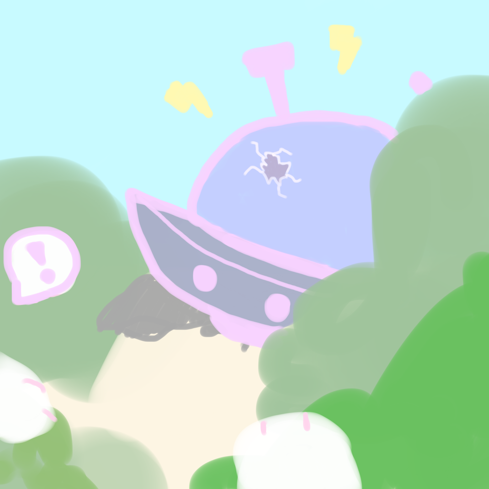

Oh no!
The spaceship needs some last-minute repairs before it can take off.
What do we do...?
Lucky I have my tools on hand! Let's quickly start fixing the ship!
Let's come up with a detailed plan on how to fix it first.
Let's scout the area for any useful resources we could use!
My friends seem sad, they've been looking forward to this trip. Let's cheer them up!
I jump in to help however I can, there's no time to waste!